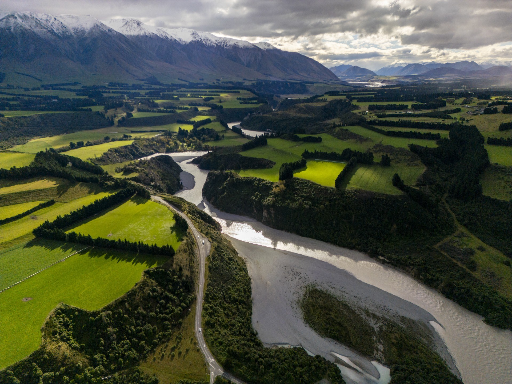
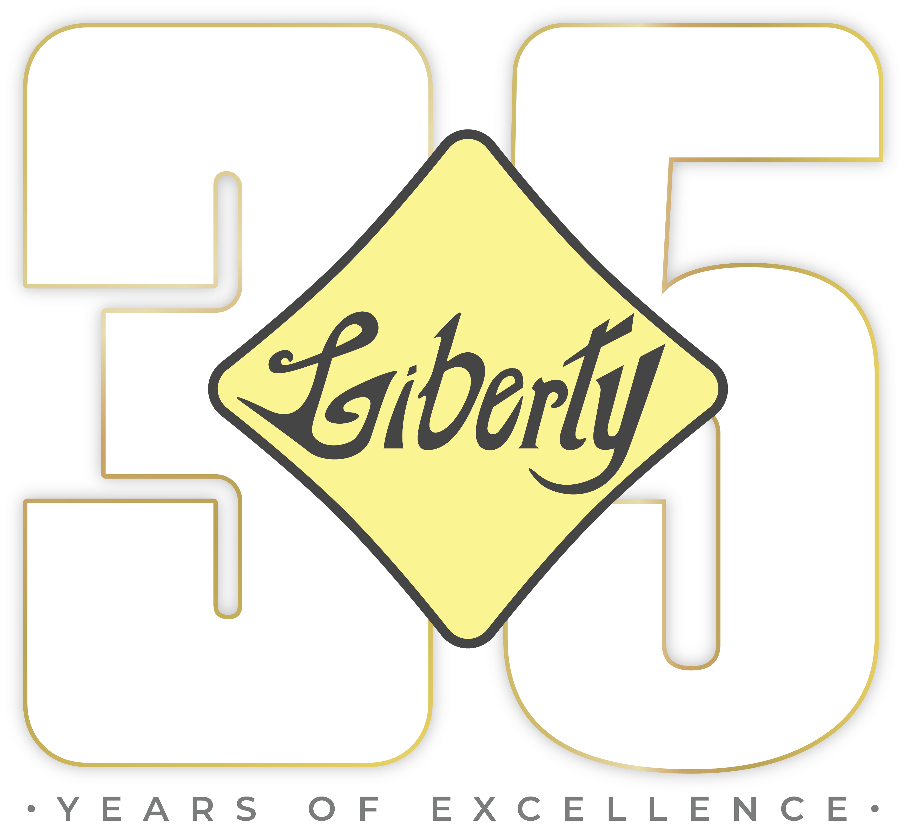
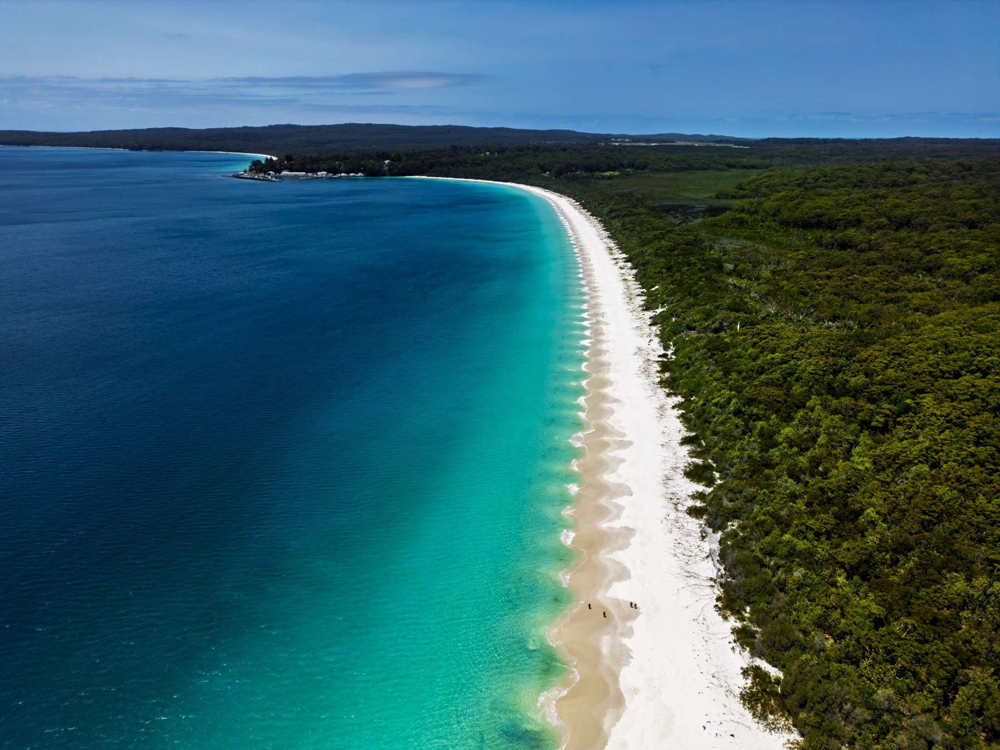
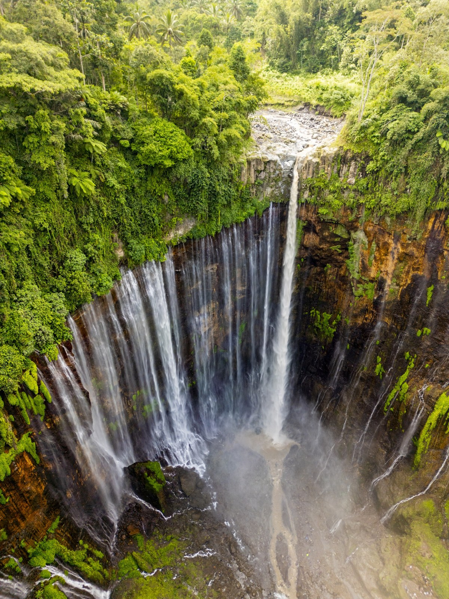
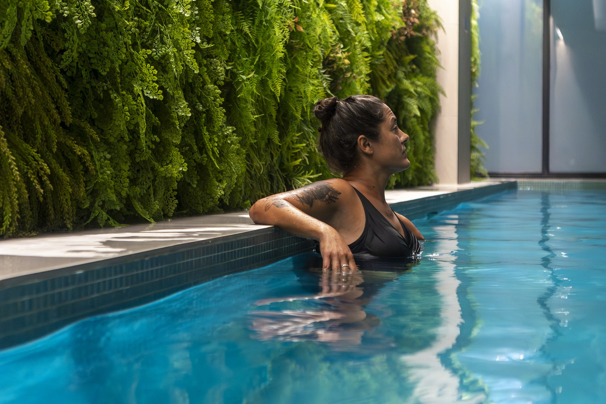
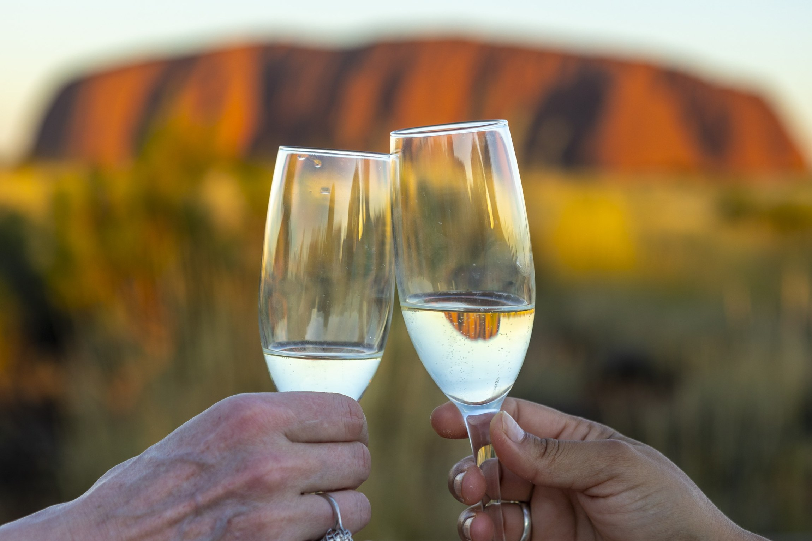

01 / DESTINATIONS
Give the journey context
Landscape, aerial perspectives and the routes between places—created for the destinations and itineraries you want to promote.


A photography and film proposal for the places, stays and people behind Liberty Southern Africa’s journeys.
EXPLORE THE PROPOSAL ↘01 / THE OPPORTUNITY
From incentive travel in Cape Town to private lodges and journeys beyond South Africa, Liberty creates experiences with many moving parts. The imagery should help your partners understand what makes each one worth choosing.
I propose producing a fresh visual collection on location with your local team: landscapes and places, accommodation, hospitality and the real experiences that bring an itinerary to life.
EXPLORE LIBERTY SOUTH AFRICA ↗
FROM DESTINATION TO DETAIL
Make it easier for travel advisors and event planners to picture the destination, the setting and the experience they can offer their clients.
A proposal for Liberty Southern Africa
South Africa · Namibia · Botswana and beyond
02 / THE PROPOSAL
We can start with a particular itinerary, lodge or incentive programme and shape the production around your priorities.

Landscape, aerial perspectives and the routes between places—created for the destinations and itineraries you want to promote.

Spaces, service, dining and the details that help clients imagine a lodge, hotel or retreat.

Activities, shared moments and local encounters, photographed and filmed with the people who make the programme possible.
All images shown are Juan Aizpuru’s existing portfolio work from other destinations. They illustrate the visual approach; they do not depict Liberty experiences or locations in Southern Africa.
03 / WORKING TOGETHER
We define the business objective together: which experiences need new imagery, who you want to reach and where the material will be used. I travel to produce on location, working alongside Liberty’s local guides and partners.
You can use the agreed images and films with your own team, or we can develop the campaign together. Scope, schedule, production logistics and usage rights are agreed for each project.
LET'S TALK AT FITUR
Douw, I would love to learn more about Liberty’s plans and explore how we could create something together.
LET'S ARRANGE A MEETING ↗VIEW MY WORK ↗